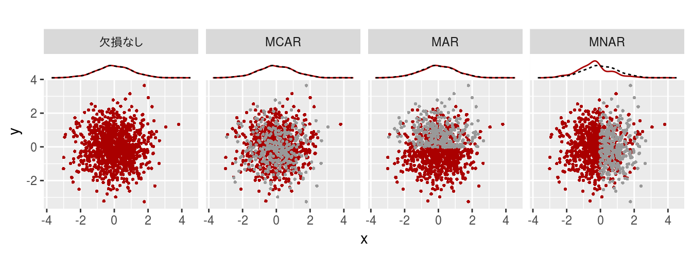
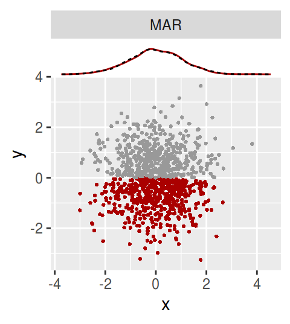

先日、欠損値の発生過程の例を図示してTweetしたところ、思ったより反響がよかったので、図をブラシュアップの上、記事に残すことにした。
俄仕込みなので、間違いがあったらTwitterで指摘して下さい。
欠損値の発生過程を理解したと思われる。xが欠損値を含みうる時、
— Atsushi (Atusy) (@Atsushi776) August 24, 2018
完全: 欠損なし
MCAR (Missing Completely At Random): xの欠損は完全にランダム
MAR (Missing At Random): xの欠損はx以外の値(yの値)に依存
MNAR (Missing Not At Random): xの欠損はxの値に依存
MNARはxの分布を歪めるため厄介。 pic.twitter.com/8VF7ogJLTE
欠損値の発生過程は大きく3種あるとされる。
- MCAR; Missing Completely At Random
- ある変数の欠損は、完全にランダム
- MAR; Missing At Random
- ある変数の欠損は、他の変数の測定値に依存してランダム
- MNAR; Missing Not At random
- ある変数の欠損は、ランダムではなく、自身の真値に依存
理解においてはMCAR, MAR, MNARの字面をあまり追い過ぎないのがキモだと思う。 「ある変数」を「データ」と記載する例も見かけるが、前者の方が個人的には分かりよい。 また、ランダムという言葉に惑わされがちだが、ここでのランダムはモデルとしてランダムか、ではなく、観測者にとってランダムに見えるか、くらいの気持ちでいた方がいい。
それでは欠損したデータを人工的に作って図にしてみよう。

xとyが平均0、分散1の正規分布に従う変数で、xの一部が欠損しうるとする。
そのとき、x-yの散布図に
- xが観測できた場合を赤点
- xが欠損した点を灰点
としてプロットした。
4つの図はそれぞれ
- 欠損なし: xの欠損がない場合
- 1000点全てを観測
- MCAR: xの欠損が完全にランダムな場合
- 1000点中300点を一様に欠損
- MAR: xの欠損がyの値に依存する場合
- y > 0 ならば欠損しうる
(正しくは1000点のy中、yの値が上位500位以内の中から300点を一様に欠損)
- y > 0 ならば欠損しうる
- MNAR: xの欠損がxの値に依存する場合
- x > 0 ならば欠損しうる (正しくは1000点のx中、xの値が上位500位以内の中から300点を一様に欠損)
散布図の上部に描かれた線は
- 赤線: 観測されたxのカーネル密度分布
- 黒破線: xを全て観測できた時のxのカーネル密度分布
尚、1000点用意したデータのうち、欠損した点の数はMCAR, MAR, MNARいずれの場合も300点ずつである。
面白いのはMCARの場合でもMARの場合でもxの分布にはほとんど影響なく、yを見ない限り両者は識別不能であることだ。 一方でMNARではxの分布が大きく歪むので、解析結果にバイアスが発生しやすいことに注意する必要がある。
ところで、MNARなxの欠損は x > 0 の時のみ起きると条件付けているものの、 x > 0 なデータの中からはランダムに選ばれている。 Not At Randomというのは見かけ上の問題に過ぎない。 勿論、x > 0 を全損させれば、Not At Randomにもできる (ランダムに全損したと解釈することもできるが!)。
同様にMARな欠損を今回はランダムに選んだが、例えばy > 0な点を全損させてはどうだろうか。

乱数を用いていないという意味ではランダムではないが、MARには違いない。 yを見ず、xにだけ注目すれば「あたかも」xはランダムに欠損している。
当記事で作成した図のソースコードはこちら。